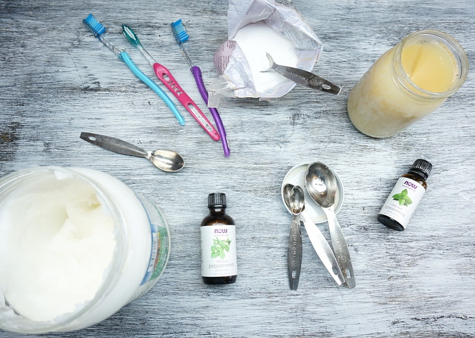

These two DIY projects are simple to do and practical to use. The first DIY project is a citrus AirFreshner. A simple 3 ingredient recipe, and you will have an air freshener on hand anytime. The second DIY is tooth paste. Another simple 3 ingredient recipe. Practical and simple. Making your own toothpaste and air freshener are easy ways to limit chemical exposure. Enjoy these Do It Yourself projects.
Each house has an array of smells lingering. ILnice to have air freshener on hand from time to time. Making your own air freshener is an easy way to add fresh, pleasant smells to your home – without the added chemical exposure and cost of store-bought brands. Once you make a batch you’ll see just how easy it is to freshen your rooms with home made natural ingredients.

Mix the ingredients inside the spray bottle. Shake well, enjoy! The citrus air freshener project is that simple. You can use this on clothes, furniture, or in the kitchen.Not only will your spray smell amazing, but when lime and baking soda are combined it's great for neutralizing oders.
Each set of teeth need to be properly cleaned to be maintained. Making home made toothpaste is an easy way to freshen your mouth. This DIY is as simple as the Air freshener. Enjoy how simple it is to make your very own tooth paste.
Mix the ingredients inside a tiny bowl and stir until pasty consistency. The peppermint is for flavor another oil could be used depending on taste. Bentonite clay will remineralize the gums and teeth. Clay is natures detox agent. The clay has been used for healing and detox throughout history. There is even a bentonite clay detox.